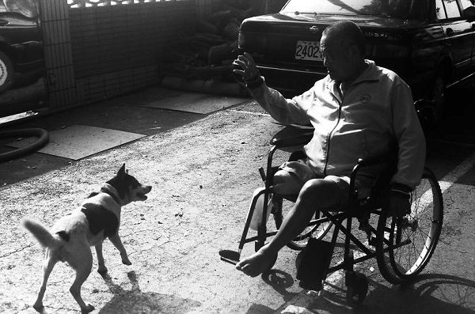

關於仁家
仁家紀實
六分鐘紀實影片
捐款與聯絡方式
關於我們
Best Viewed with IE 6.0+ and 1024*768 screen.
1 / 6
2 / 6
沒有人懂我孤獨世界裡的瘋狂孤獨。

3 / 6
「 讓被拍攝的對象感受到你對他的愛，他才可能釋放自己的感情投入回應你。」
4 / 6
我還在夢中，做著年輕時的夢。
5 / 6
我似乎在當中聞到了生命的味道。鹹鹹的，苦苦的，有點黏稠，偶有眼淚的味道。
6 / 6
如果這樣不順遂的人生是夢 那會不會醒來呢 ?
previous
/
next